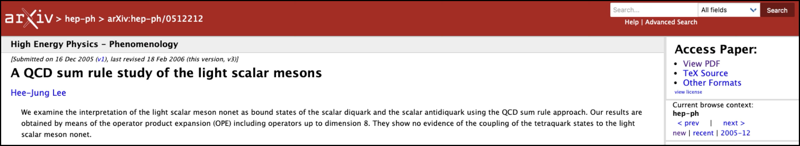
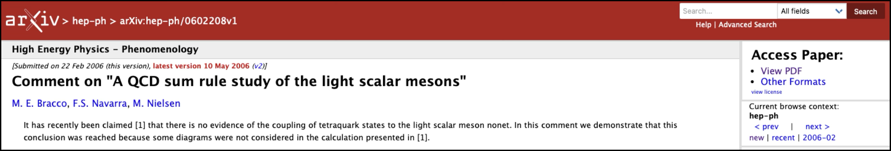
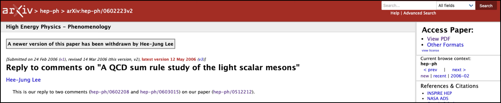
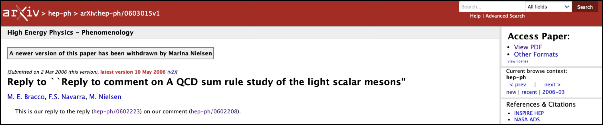

def thisTalk : Talk where
title := "Interactive theorem provers and mathematics"
presenter := "Joseph Tooby-Smith"
date := "15th May 2025"
location := "Reykjavik, Iceland"
Talk Overview
Part I
What is an interactive theorem prover?
Part II
The past
Part III
The future
Story 1
The Knight Capital Group Incident

Story 2: The arXiv paper hep-ph/0512212
$E = A_1 + A_2 + A_3 + \ldots + A_n$
$E = A_1 + A_2 + A_3 + \ldots + A_n + B_1 + B_2$
$E = A_1 + A_2 + A_3 + \ldots + A_n$
$E = A_1 + A_2 + A_3 + \ldots + A_n + B_1 + B_2$




Different Manifestations of the Same Problem
A solution
Correct by construction
Proof assistants
Popular Proof Assistants
Rocq
Isabelle/HOL
Lean
Agda
An example of Lean
View at: https://josephtoobysmith.com/Slides/Iceland2025.html
How Lean Works
- • Define types by their terms
- • Create new types from existing ones
- • Propositions as types
- • Proofs are terms of proposition types
- • Uses axioms like function extensionality
Advantages of Proof Assistants
Correctness
Tactic Automation
Searchable
Reusable
Executable
Talk Overview
Part I
What is an interactive theorem prover?
Part II
The past
Part III
The future
Two Eras of Formalization
Pre-2017
Post-2017
Pre-2017: Characterized by one-off projects
- 2004(Isabelle/HOL): Prime number theorem
- 2004(Rocq): Four color theorem
- 2005(Isabelle/HOL): Jordan Curve theorem
- 2013(Rocq): Odd order theorem
- 1998-2015(Isabelle/HOL): Kepler conjecture (Hales' proof)
November 2014: Breakthrough Prize Ceremony
Is anyone willing to bet that computer-verified proofs will not be widespread in mathematics in 25 years?
— Yuri Milner (paraphrased)
"I'll take that."
— Jacob Lurie
"Yes, me too."
— Richard Taylor
"Some people will be working on computer verified proofs."
— Terence Tao (paraphrased)
Story taken from: Michael Harris' blog.
Post-2017: The era where open source met mathematics
Post-2017: Characterized by big community level projects: Mathlib
- • A monolithic library of mathematics formalized in Lean
- • Started in 2017
- • Over 400 contributors, 80,000 definitions and 160,000 theorems
- • Promoted heavily by Kevin Buzzard